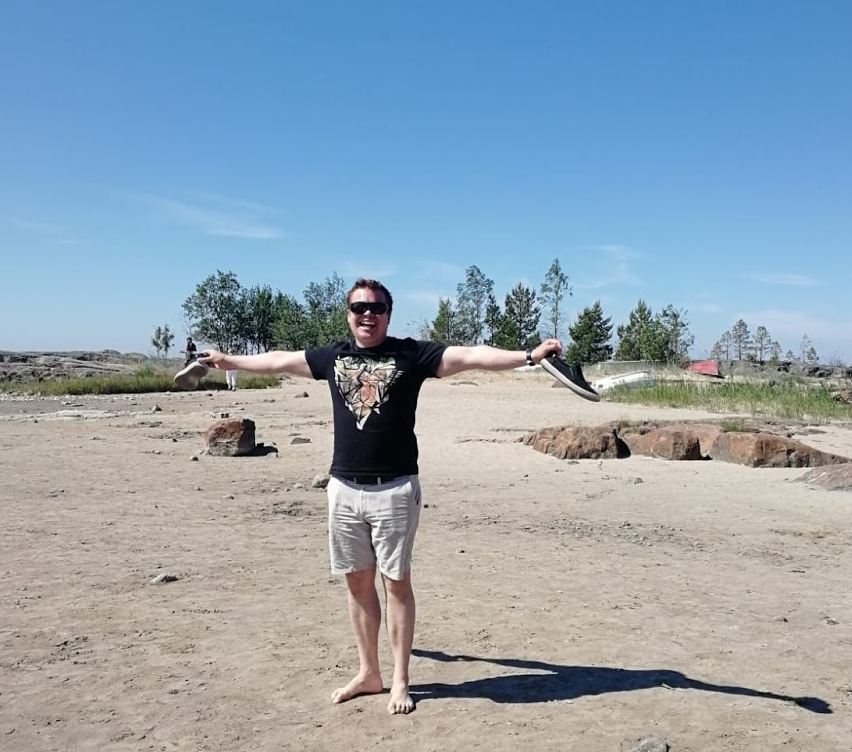

Minä olen Timo Anttila
Konetekniikan Insinööriopiskelija Oulusta
Tietoa minusta
- innokas, innovatiivinen, luova -
Tunnen suurta intohimoa tekniikkaa ja tiedettä kohtaan. Luonnostani innostun asioista joista suurin osa ihmistä ei välitä ja pyrin jatkuvasti etsimään ongelmia ratkottavaksi. Opiskelen konetekniikkaa ja käytän paljon vapaa-aikaani henkilökohtaisten projektien, pienen värkkäämisen ja ylimääräisten kurssien parissa. Joskus suorastaan tuntuu ettei aikaa ole tarpeeksi kaikkeen puuhasteluun, jota haluan tehdä.
Valmistun konetekniikan insinööriksi huhti-toukokuussa 2021. Opintojeni pääpaino on ollut mekaniikkasuunnittelussa ja koneautomaatiossa. Tällä hetkellä teen tuotekehitysaiheista opinnäytetyötä, opiskelen matematiikkaa DI-opintojani varten, suoritan viimeisiä kurssejani ja etsin konetekniikan työpaikkaa. Olen erityisen kiinnostunut mekaniikkasuunnittelusta ja tuotekehityksestä.
Rakastan uusia haasteita ja ongelmanratkaisua. Ratkaisen mielelläni sellaisia ongelmia, joihin ei ole selkeitä ja valmiita ratkaisuja, sillä tämä jättää tilaa luovuudelle ja ainutlaatuisten ratkaisujen löytämiselle. Alussa ongelmien monimutkaisuus saattaa tehdä ongelmista mahdottomien tuntuisia, mutta askel kerrallaan kaikki ongelmat pilkkoa pienempiin, helpommin ratkaistaviin palasiin.
Opiskelun ja näpertelyn tasapainoksi käyn mielelläni lenkkeilemässä, uimassa, vaeltamassa, pelaamassa sulkapalloa ja kalastamassa.
Muutamia projektejani